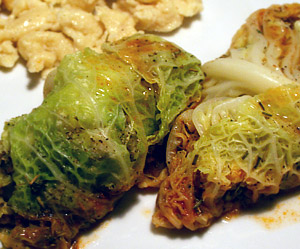

Chabisbünteli
4,5 von 6Die äusseren Blätter und den Strunk vom Kabis entfernen. Die Blätter sorgfälltig lösen und in Salzwasser ca. 10min kochen. Die grossen Blätter auslegen und die kleinen fein schneiden. 1 Zwiebel, Petersilie und die gehackten Kabisblätter in Butter andünsten. Semelstücke und Bouillon dazu. Mit Salz, Pfeffer und Majoran würzen. Die füllung in die grossen Blätter geben, diese zurollen und 10 min in Butter Braten. Mit etwas Weisswein und Bouillon ablöschen. Rosmarin und etwas Tomatenmark dazu und nach weiteren 10min servieren.
